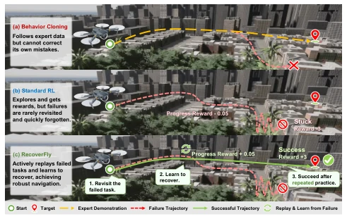
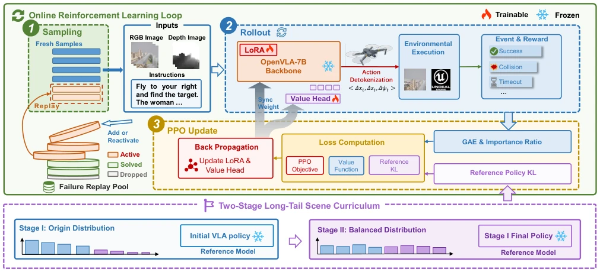

This paper provides a "reinforcement learning remedial course" for the UAV-VLA model. Although end-to-end models like AerialVLA appear impressive, behavior cloning (BC) makes them like students who only memorize standard answers; once they enter error states not covered by experts during testing, they cannot self-correct (Ross, Gordon, and Bagnell 2011). RecoverFly attempts to "correct deviations" using RL, implementing a failure-aware mechanism that specifically targets those failed trajectories for repeated practice. Although the results are indeed good, with SR improving by several points, RL training itself is a resource-intensive beast; a 30% training set rollout budget sounds economical, but actually requires significant compute power, using 8 A100s for 21 hours. Moreover, this method relies heavily on simulation environments (AirSim); will there be a "sim-to-real gap" in real-world deployment? The paper does not elaborate. However, being able to solve long-tail scenarios and policy drift together counts as adding an insurance policy for VLA deployment; at least it is more robust than pure BC, suitable for UAV tasks with high robustness requirements.
研究动机Motivation
UAV-VLN 的核心难点在于闭环执行中的错误累积。现有的端到端 VLA 策略（如 AerialVLA [Xu et al. 2026]）主要依赖行为克隆（Behavior Cloning），这导致模型在训练时模仿专家数据，但测试时若进入专家未覆盖的错误状态，就无法自我修正（Ross, Gordon, and Bagnell 2011）。标准 RL 虽然能提供反馈，但在 UAV 场景下面临样本利用低、长尾场景分布不均（rare scenes neglected）以及策略分布偏移（policy distribution shift）的问题（Lin et al. 2025; Jiang et al. 2025）。特别是当无人机在长轨迹中因局部误差导致碰撞或超时，这些高价值的失败样本在标准在线采样中极易被遗忘。此外，无人机数据集昂贵且场景分布高度不平衡，导致标准采样强调频繁场景而忽略罕见场景，削弱了向未见地图和困难路线的迁移能力（Lin et al. 2025; Jiang et al. 2025）。这些问题是耦合的，因为最需要纠正的罕见或困难案例，在标准训练中最不可能被重访。因此，需要一种能主动重访失败案例、适应长尾分布且保持原有能力的后训练框架。
The core difficulty of UAV-VLN lies in error accumulation during closed-loop execution. Existing end-to-end VLA policies (such as AerialVLA [Xu et al. 2026]) mainly rely on Behavior Cloning, which causes the model to imitate expert data during training, but if it enters error states not covered by experts during testing, it cannot self-correct (Ross, Gordon, and Bagnell 2011). Although standard RL can provide feedback, it faces issues of low sample utilization, uneven long-tail scene distribution (rare scenes neglected), and policy distribution shift in UAV scenarios (Lin et al. 2025; Jiang et al. 2025). Especially when drones collide or timeout due to local errors in long trajectories, these high-value failure samples are easily forgotten in standard online sampling. Furthermore, UAV datasets are expensive and scene distributions are highly imbalanced, causing standard sampling to emphasize frequent scenes while ignoring rare scenes, weakening transferability to unseen maps and difficult routes (Lin et al. 2025; Jiang et al. 2025). These problems are coupled, because the rare or difficult cases that need correction most are least likely to be revisited in standard training. Therefore, a post-training framework is needed that can actively revisit failure cases, adapt to long-tail distributions, and maintain original capabilities.

Figure 1: Comparison of training paradigms for UAV- VLN. Behavior cloning lacks corrective learning, and stan- dard RL may discard informative failures during online sam- pling. RecoverFly revisits unresolved tasks and learns recov- ery behaviors from interaction feedback.
RecoverFly is an online RL post-training framework based on PPO. The overall process starts with a pre-trained AerialVLA policy, fine-tuned via LoRA and Value Head. Core innovations include: 1. **Token-Level PPO**: Decomposes the action token sequence generated by VLA, independently calculating importance ratios and clipping for each valid action token, avoiding signal dilution caused by sequence-level clipping, adapting to grammar-constrained autoregressive action generation. Action syntax includes 3 numerical control tokens and one optional LAND token, decoded into 3-DoF control. 2. **Dynamic Failure Replay**: Maintains a failure pool, storing unresolved initial task instances rather than old trajectories. At each online reset, failure instances are replayed at a certain proportion, regenerating rollouts with the current policy to ensure learning signals come from real failures under the current distribution, rather than outdated experience. 3. **Two-Stage Long-Tail Scene Curriculum**: The first stage samples according to the original data distribution, the second stage forces balanced sampling quotas for each scene, improving generalization to rare maps and objects. 4. **Reference Policy KL Regularization**: Freezes the reference policy (initial policy or first-stage policy) in stages, limiting policy update magnitude via KL divergence to prevent RL optimization from destroying navigation capabilities learned by the pre-trained model.

Figure 2: Overview of RecoverFly. RecoverFly combines token-level PPO with dynamic failure replay to learn corrective behaviors from closed-loop interaction while preserving on-policy rollouts. Furthermore, a two-stage long-tail scene curriculum and stage-wise reference-policy KL regularization improve rare-scene adaptation and constrain policy distribution shift.
Evaluated on the TravelUAV dataset, containing three splits: Seen, Unseen Map, and Unseen Object. Baselines include heuristic methods, task-specific models (such as TravelUAV [Wang et al. 2025]), general navigation models (such as LongFly [Jiang et al. 2025]), and end-to-end VLA baselines (AerialVLA [Xu et al. 2026]). Metrics cover NE, SR, OSR, SPL. Results show RecoverFly improved SR by 8.37 percentage points on the Seen set, 5.39 percentage points on Unseen Map, and reached 59.72% on Unseen Object. Ablation studies show failure replay significantly improved SR on Seen and Unseen Object, while two-stage curriculum learning contributed most to Unseen Map. KL regularization effectively alleviated policy drift. Total rollout budget is approximately 30% of the training set size, verifying efficiency. Training used 8 NVIDIA A100 (80GB) GPUs, taking about 21 hours.